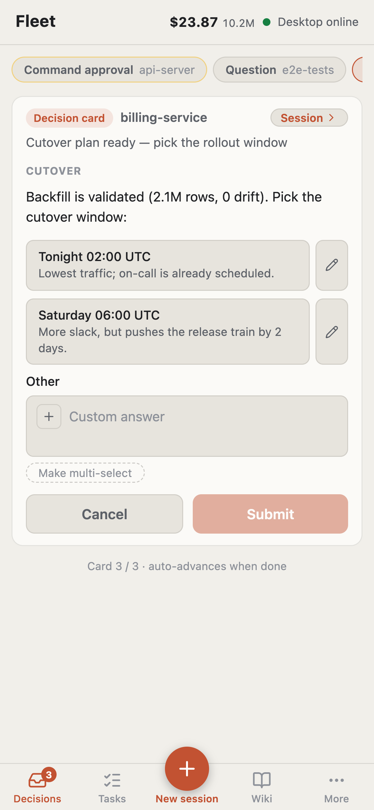

Know what needs you.
See which sessions are working, waiting, or ready for your attention. Open the timeline when you want the details.
A home for your coding agents.
Bring Claude Code and Codex together. See what’s moving, step in when it matters, and take your work with you.
Download Claw FleetExplore the workspace Free & open source. Your agents, your machine.
The big picture, without opening another terminal. Claude Code / Codex
Questions from your agents meet in one inbox. See the context, choose a direction, and let the task continue.
Interactive exampleThis example stays in your browser. No agent or deployment is started.
When an agent registers a handoff, Fleet starts the next session with its brief and plan. Follow the chain without piecing the story together yourself.
Interactive exampleSession 01 → Handoff → Session 02
The task and checklist live with the project.
Progress and decisions stay visible.
A handoff carries the brief into a fresh session.
Free & open source. Your agents, your machine.
A few tasks or a busy afternoon: keep the important parts in view.
See which sessions are working, waiting, or ready for your attention. Open the timeline when you want the details.
Follow token usage and estimated spend as tasks run. Interrupt a session when it heads in the wrong direction.
Return to plans, reports and a searchable project wiki. The next session starts with more than a blank chat.

Mobile web interface · Example data
Your desk doesn’t have to be the place every decision happens. Pair your phone, open your inbox, and give your agents the next direction.
Get Claw Fleet for your computer. Connect the coding agents you already use.
GitHub downloads are available now. A China mirror will appear here when it is enabled.
chmod +x fleet-linux-x64
./fleet-linux-x64 webuiOpen http://127.0.0.1:4571 in your browser. For ARM64, replace x64 with arm64 in both commands.
Install and sign in to Claude Code or Codex first. Open Fleet and use Settings to configure the agents you want to run.
Choose a project, describe the task, and pick your model. Follow progress in the workspace.
Enable Mobile in the desktop app and scan the pairing QR code. Keep your computer and Fleet running while you connect remotely.
Fleet brings your coding agents together. You still use Claude Code or Codex to do the coding, with their own account and model access.
Claw Fleet is free and open source under AGPL-3.0. Your coding agent’s subscription or API usage is billed separately. Spend shown in Fleet is an estimate based on session usage.
Yes, for the desktop workflow shown here. Your agents run on your computer, so it and Fleet must remain running for your phone to reach them.
Fleet reads local session files for monitoring. Coding agents connect to their own providers. Remote phone access uses a relay; you can also self-host the relay. Features that call a model use the provider you configure.
You can use the mobile web interface: enable Mobile in Fleet and scan the QR code. Push notifications depend on your browser, OS and permissions; some devices require adding the site to the home screen.
Use the China mirror when it is offered in the download section. If it is not listed, it has not been enabled yet. GitHub Releases remains the official alternative.